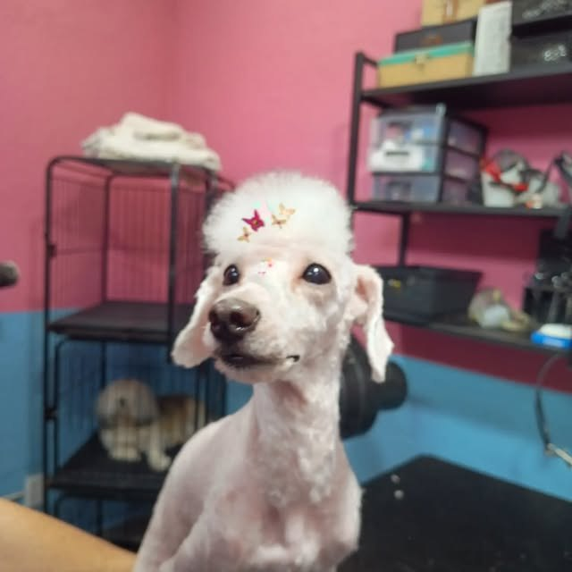
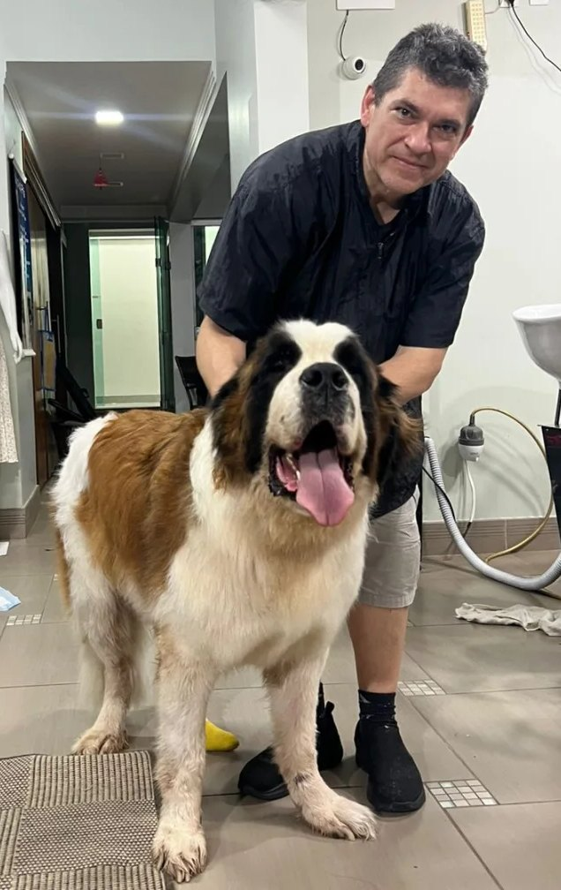

Banho
Banho caprichado, secagem e escovação. Ele volta limpinho, macio e cheiroso.
Banho, tosa, hidratação e corte de unhas, feitos com calma e carinho. Cães de todos os tamanhos e gatos também. É só chamar no WhatsApp e marcar o horário.
5,0 no Google · 114 avaliações
Pergunte pelo WhatsApp o valor para o porte e a pelagem do seu pet. Fique de olho também nas promoções do Instagram.
Banho caprichado, secagem e escovação. Ele volta limpinho, macio e cheiroso.
Tosa higiênica, tosa completa e tosa em poodle, sempre do jeito que combina com o seu pet.
Para pelos ressecados ou embaraçados. Deixa a pelagem macia e com brilho.
Unhas aparadas com cuidado, para o pet andar confortável e não arranhar ninguém.
O toque final: laços, gravatinhas e aquele acabamento que rende foto no Instagram.
Banho e cuidados para gatos, com toda a paciência que eles merecem.
Sem fila e sem espera: o horário fica reservado para o seu pet.
Conte o porte, a raça e o que o pet precisa.
De segunda a sábado, no horário que for melhor para você.
Tem serviço de buscar e levar em casa. Pergunte se atende o seu bairro.
Banho tomado, pelo macio e, se quiser, um laço novo.
Cada um sai de banho tomado e posa para a foto. Toque para ver maior.
Tem muito mais no Instagram: @petlorebanhoetosa
Shih-tzu, poodle, golden, bulldog e até São Bernardo. Cada pet recebe o tempo e o cuidado que o porte e a pelagem pedem.

O que os tutores contam no Google.
“Além de tudo minha cachorrinha sempre volta super cheirosa.”Cliente · avaliação no Google
“Ambiente maravilhoso, os pets ficam todos felizes quando chegam.”Cliente · avaliação no Google
“Pessoas prestativas e carinhosas com os animais!”Cliente · avaliação no Google
| Segunda | 8h às 20h |
| Terça | 8h às 20h |
| Quarta | 8h às 20h |
| Quinta | 8h às 20h |
| Sexta | 8h às 20h |
| Sábado | 8h às 18h |
| Domingo | Fechado |
Atendimento com hora marcada. Em feriados o horário pode mudar: confirme pelo WhatsApp.